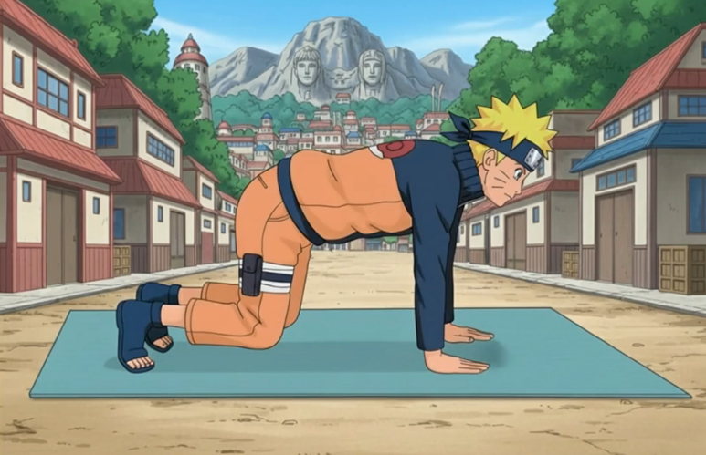
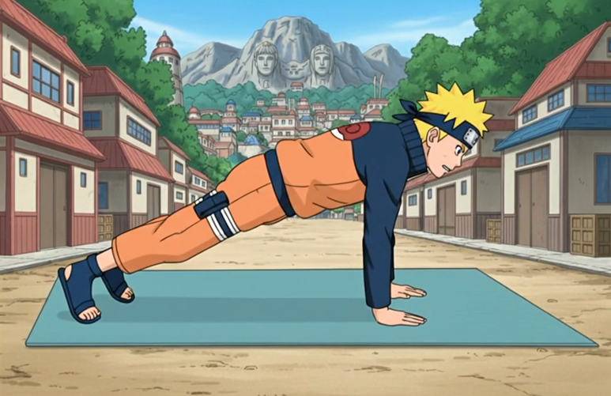
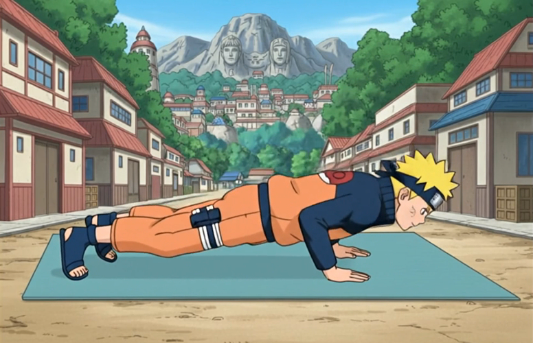

|
Naru
Teach
Berolahraga Dengan Bimbingan Naruto |
Belajar Push-Up Bersama Naruto |
Manfaat Push-UpDengar, ninja muda! Push-up itu bukan sekadar latihan biasa, ini latihan yang bikin tubuhmu kuat dari ujung kepala sampai ujung kaki! Lenganmu akan menjadi tangguh untuk melindungi dirimu dan menyerang musuh, bahu dan dada ikut perkasa supaya setiap gerakanmu lebih bertenaga, dan punggungmu makin kuat biar postur tetap stabil. Tapi itu belum semua! Otot inti di perutmu juga ikut bekerja, bikin tubuhmu seimbang dan fleksibel dan penting banget kalau mau lincah di medan pertempuran. Selain bikin tubuh fisik kuat, push-up juga melatih stamina dan daya tahanmu; semakin banyak kamu latihan, semakin lama kamu bisa bertahan tanpa capek. Koordinasi dan kontrol tubuhmu juga meningkat, sehingga setiap gerakanmu lebih tepat dan efektif, kayak gerakan ninja sejati. Latihan ini juga bikin mentalmu kuat, karena setiap push-up itu mengajarkan kesabaran, konsistensi, dan tekad untuk terus maju meskipun lelah. Jadi, jangan remehkan push-up, ninja muda! Setiap repetisi membawa kamu lebih dekat ke tubuh yang kuat, lincah, dan siap menghadapi tantangan apapun, kayak ninja sejati yang pantang menyerah dan selalu siap melindungi teman-temannya! |
Bentuk Push-Up yang Benar
Turun ke posisi siap tempur, ninja!
 Cari tempat yang nyaman di lantai, terus posisikan tangan dan lututmu di sana. Telapak tangan rata di lantai, persis di bawah bahu. Jari-jari lurus ke depan. Lihat ke bawah, dan jaga kepala sama leher lurus dengan punggungmu. kita harus kuat kayak ninja!  Geser kakimu ke belakang sejauh yang kamu bisa! Satukan atau pisahkan sedikit, terus tumpukan berat badan di ujung kaki. Jaga kaki dan punggung tetap lurus selama push-up. kita latihan kayak ninja sejati!  Kencengin perut dan tarik napas saat siku menekuk! Jaga punggung dan kaki tetap lurus, turunin badan sampai dada hampir nyentuh lantai, sekitar 2-3 inci. Kita kuat, ninja!
Hembuskan napas saat dorong tangan ke lantai! Angkat badan tanpa tekuk lutut, jangan turunin atau angkat pinggul. Begitu lengan lurus lagi dan balik ke posisi awal, selesailah 1 kali push-up, ninja!
Coba lihat berapa push-up yang bisa kamu lakukan berturut-turut tanpa ngelanggar formasi, ninja! Jadikan latihan ini bagian dari rutinitasmu, jangan lupa istirahat di antaranya. Kalau mulai terasa lebih gampang, tambah jumlah repetisi atau set untuk tantang diri dan bikin otot makin kuat! |
Rencana Latihan Push-Up Untuk Pemula
|
Tips
|
|
FAQ1. Berapa kali saya harus melakukan push-up setiap hari?Untuk pemula, mulailah dengan 2-3 set berisi 5-10 repetisi setiap hari. Tingkatkan jumlahnya secara bertahap sesuai kemampuan Anda. 2. Apa yang harus saya lakukan jika push-up membuat kaki saya sakit?Jika Anda merasa sakit pada kaki, cobalah melakukan push-up dengan lutut menyentuh lantai untuk mengurangi beban pada kaki. Pastikan juga untuk melakukan pemanasan sebelum latihan. 3. Berapa banyak berat badan yang akan saya turunkan dengan melakukan push-up?Satu menit melakukan push-up membakar sekitar 7 kalori. Sebagai perbandingan, dibutuhkan sekitar 8 jam push-up untuk menurunkan satu pon (sekitar 0,45 kg) berat badan. |